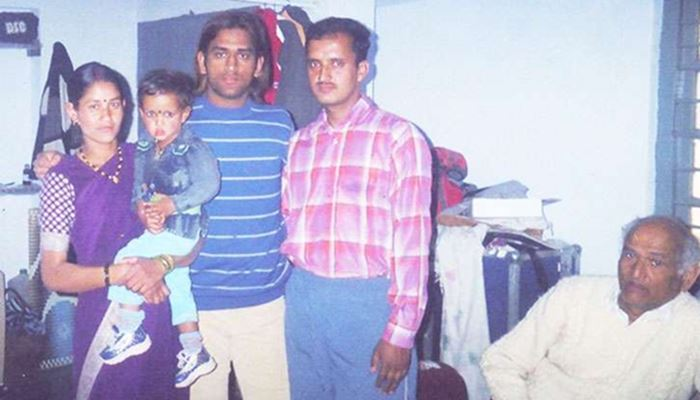
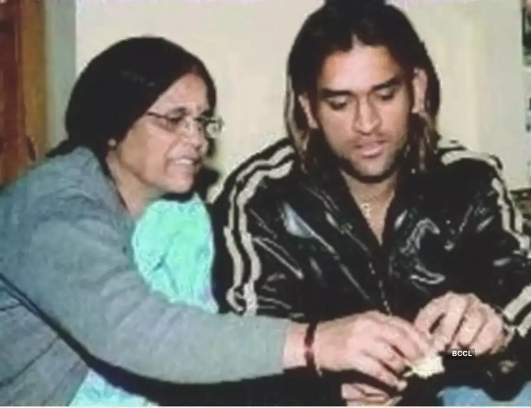
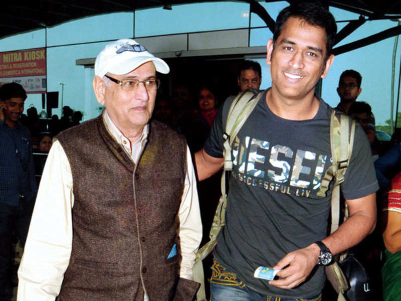
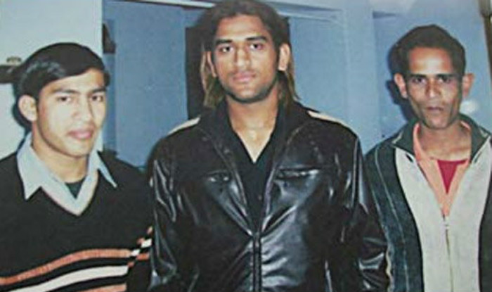
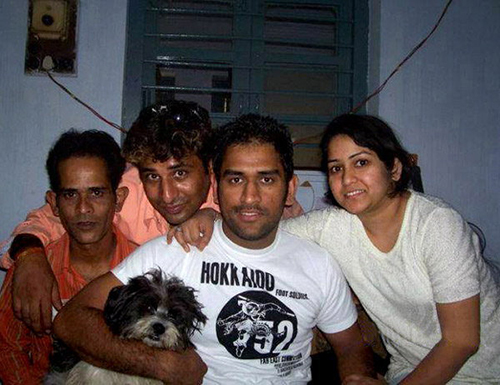

M.s Dhoni
Hello Today I am telling about indian cricketer M.s Dhoni

Mahendra Singh Dhoni born 7 July 1981 is an Indian professional cricketer who was captain of the Indian national cricket team in limited-overs formats from 2007 to 2017 and in Test cricket from 2008 to 2014. He is a right-handed wicket-keeper batsman.
Former Indian captain MS Dhoni's parents Pan Singh and Devaki Devi have recovered from Covid-19 and have been discharged from the hospital where they were undergoing treatment. The couple returned to their home in Ranchi after showing no discomfort following a negative Covid-19 test.
The main reason why MS Dhoni is one of the most loved cricketers is his calm and humble attitude. For that thing, the credit goes to MS Dhoni’s mother, Devaki Devi. She is one of the main reasons why Dhoni is among the most celebrated athletes of the country. Devaki Devi is a housewife and raised her three children. In the movie MS Dhoni: The Untold Story, the role of MS Dhoni’s mother, Devaki Devi was played by a well-known theatre actress Neeta Mohindra.
There must be something about a man who has raised a son like Mahendra Singh Dhoni. Pan Singh Dhoni is the father of former Indian captain, MS Dhoni. He has always remain far from media and limelight. Dhoni’s father belonged to Lawali village in the Almora district of the hilly state of Uttarakhand. His father along with his family migrated to Ranchi, which was at that time a part of Bihar, now the capital city of Jharkhand. Pan Singh Dhoni used to work at junior level management positions at the Metallurgical & Engineering Consultants (India) Limited, a PSU under the Central Ministry of Steel. In the movie MS Dhoni: The Untold Story, the role of MS Dhoni’s father, Pan Singh Dhoni was played by famous Bollywood actor Anupam Kher played the role of MS Dhoni’s father. He has rarely been spotted by media.
Narendra Singh Dhoni is the brother of MS Dhoni. When the movie MS Dhoni: The Untold Story was realeased, fans were confused because there was no presence of MS Dhoni’ brother in the biopic. It is rumored that Dhoni has not been in talking terms with his elder brother for many years now due to a family feud. Dhoni’s family members are also not close to their son after Narendra decided to live separately. Narendra Singh Dhoni is a politician in Ranchi, and lives with his wife and two kids.Earlier, he was a member of the Bharatiya Janata Party but defected in 2013 to join Samajwadi Party.
Jayanti Gupta is the sister of MS Dhoni. She has also been clicked with Dhoni many a times. Jayanti has attended cricket match many a times in the stadium. She has played a supportive role in the early life of Dhoni. When MS Dhoni faced difficulty in his initial years of cricket, it was his sister who was there to back him. In the movie, MS Dhoni: The Untold Story, the role of MS Dhoni’s sister, Jayanti Gupta is played by Bhumi Chawla. She is elder to MS Dhoni and professionally she is an English Teacher. Team India former skipper’s elder sister, Jayanti Gupta is married to Gautam Gupta.
Sakshi Dhoni is a familiar personality to Indian cricket fans and everyone is aware of her. Dhoni and Sakshi met in a hotel where she was doing internship. Dhoni and Sakshi married to each other on 4th of July 2010. Sakshi is quite active on her social media and often shares pictures with her husband and also give his fans a glimpse of Dhoni. In the movie, MS Dhoni: The Untold Story, the role of MS Dhoni’s wife, Sakshi Dhoni was played by Kiarra Advani.
 h1> Who is the daughter of M.s Dhoni ?
h1> Who is the daughter of M.s Dhoni ?
The newest member of MS Dhoni family is his daughter Ziva Dhoni. She was born on 6th February 2015 in Ranchi Jharkhand. At that time, Dhoni was playing in ICC World Cup Cricket 2015. After two months, MS Dhoni met her daughter Ziva at Ranchi Airport, India. Her daughter is widely popular among Indian fans. She also has an instagram account which is managed by his mother, Sakshi Dhoni. Ziva has been spotted many a times in the stadium cheering for her father.

Dhoni did his schooling at DAV Jawahar Vidya Mandir, Ranchi, Jharkhand and excelled in multiple sports such as badminton, football and cricket. He played as a goalkeeper for his football team and played cricket for a local club. Jawahar Vidya Mandir, Shyamali is a co-education English Medium School located in the tranquil surroundings of the Shyamali Colony of Mecon. The School imparts education from the Nursery to the Senior Secondary Level. Affiliation of the school is permanent to the Central Board of Secondary Education (CBSE), New Delhi. Further managed by Jawahar Vidya Mandir Education Society, Ranchi.

Dhoni got admission to Gossener College after clearing his higher secondary from DAV School, Shamali. "Dhoni got admission in 1999 through the sports quota to pursue B.Com. His roll number is 288 and he is still a student of our college," said Siddharth Ekka, principal, Gossener College. Indian cricket skipper Mahendra Singh Dhoni's decision to pursue graduation from St Xavier's college here has disappointed teachers and students of Gossener College, where he had enrolled for a bachelor's course in commerce in 1999.
 Goosener college of jharkhand
Goosener college of jharkhand
 St. Xavier's College, Ranchi
St. Xavier's College, Ranchi